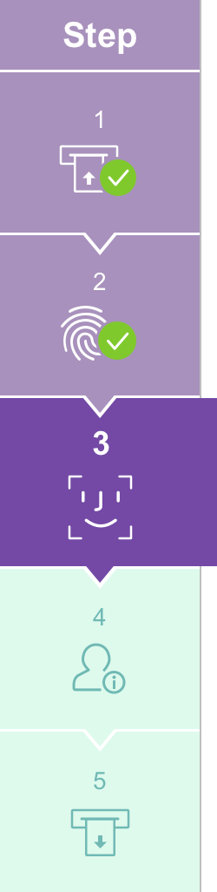

<div class="mainPanel">
    <sc2-timer (timerExpired)="timeExpire()" class="timer"></sc2-timer>
    <input class="buttonTC" type="button" value="{{'SCN-GEN-STEPS.LANGUAGE' | translate}}" (click) = "langButton()">
    
    <p class="steps-div">{{'SCN-GEN-STEPS.NAVIGATION' | translate}}</p>

    <label class="labelStay" >{{'SCN-GEN-STEPS.UPDATE-CONDITION-STAY' | translate}}</label>
    <label class="label1" >{{'SCN-GEN-STEPS.UPDATE-STAY-CONDITION-INFO' | translate}}</label>
   <div class="stayInfo" (click)="nextRoute()">
       <table class="stayTable">
           <tr>
               <td style="height: 25px;">
                   {{'SCN-GEN-STEPS.CONDITION-OF-STAY' | translate}}
               </td>
           </tr>
           <tr >
               <td>
                   {{conditionOfStay}}
               </td>
           </tr>
           <tr >
               <td>
                   {{'SCN-GEN-STEPS.LIMIT-OF-STAY' | translate}}
               </td>
           </tr>
           <tr>
               <td>
                   {{limitOfStay}}
               </td>
           </tr>
       </table>

   </div>
    <!--   (click)="nextRoute()" -->

    <input #imgNext type="hidden" (click)="nextRoute()">
    <input type="image" src="../../../../../../assets/images/button_Abort.png" class="exitButton" (click)="nextRoute()" />
    <input class="exitButton" type="button" value="{{'SCN-GEN-STEPS.ABORT' | translate}}" (click) = "backRoute()">
    <label class="footerSteps">scn-gen-step-001</label>
</div>